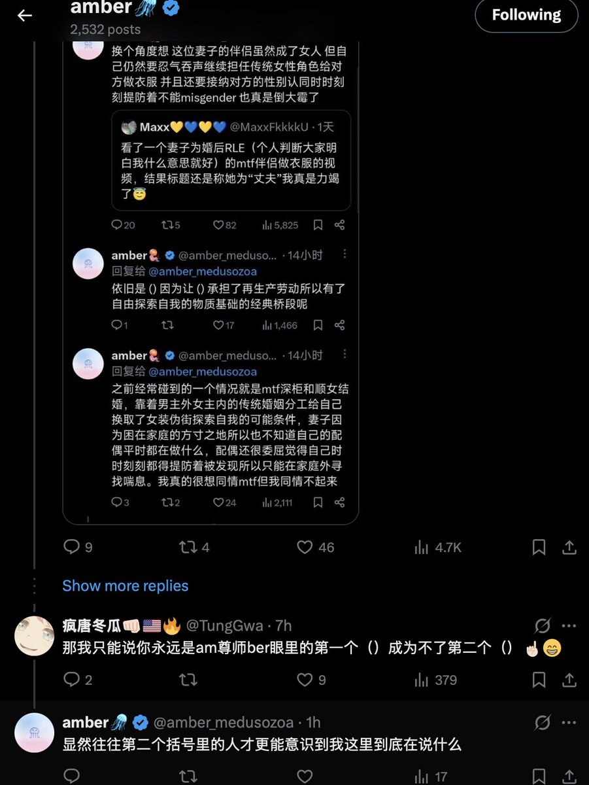
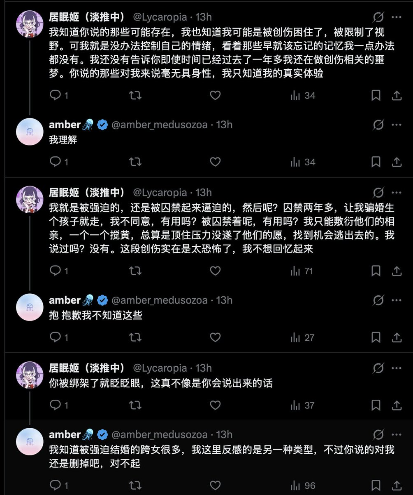

就是因为重视交叉性，所以才有必要强调区分不同类型的跨女+顺女婚姻里到底都关涉哪些具体的劳动/权力关系差异，而不是完全打包归咎到某种毫无分化的「结构性问题」里。不做肤浅的道德批判显然不意味着放弃一切形式的伦理承诺，更不意味着放弃对关涉物质分配和劳动关系的具体考察，否则一切作恶都可以用「结构」搪塞过去。婚姻本身就是一种资产阶级体系下的再生产劳动单元，它发挥的物质功能是无比显白的，批判一些跨女在这个过程中的共谋和承认她们受到的压迫并不矛盾，我最后的落脚点也无非只是说我对这样的人没有同情。



@amber_medusozoa
又到了一周一度的针对暴论的批判时间
小号看到这个帖子我就来气，
Amber老师的intersectionality 都学到哪去了？
第二波女权运动的成果都白做了？
一个个反驳的也都没批判到点上
对amber老师的人身攻击就是隔靴搔痒
毕竟她是来找骂的
trans oppression是一个简单的男女对立问题吗？ https://t.co/0PRIhybDFr
又到了一周一度的针对暴论的批判时间
小号看到这个帖子我就来气，
Amber老师的intersectionality 都学到哪去了？
第二波女权运动的成果都白做了？
一个个反驳的也都没批判到点上
对amber老师的人身攻击就是隔靴搔痒
毕竟她是来找骂的
trans oppression是一个简单的男女对立问题吗？ https://t.co/0PRIhybDFr